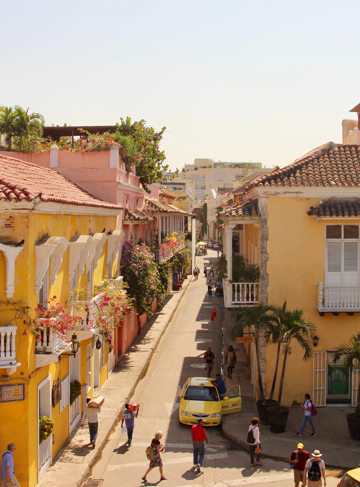
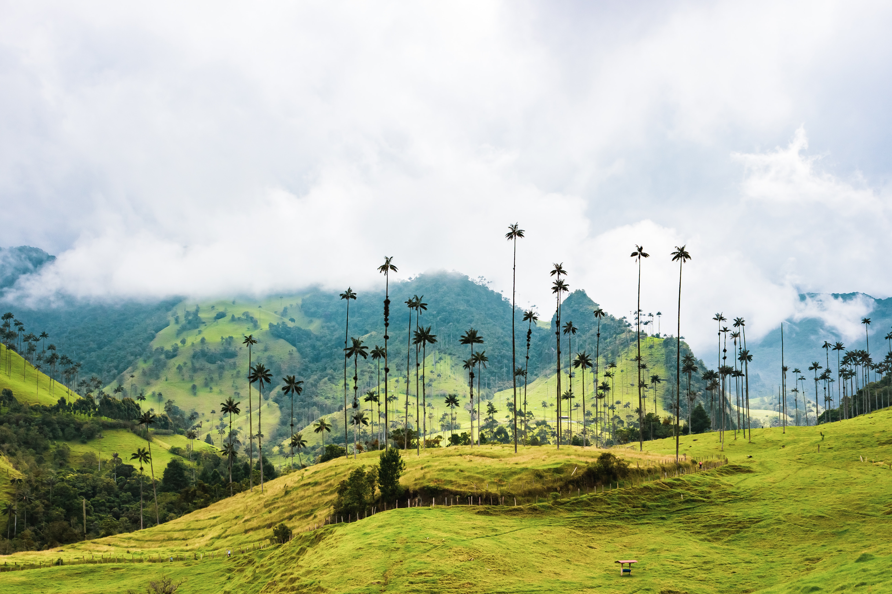
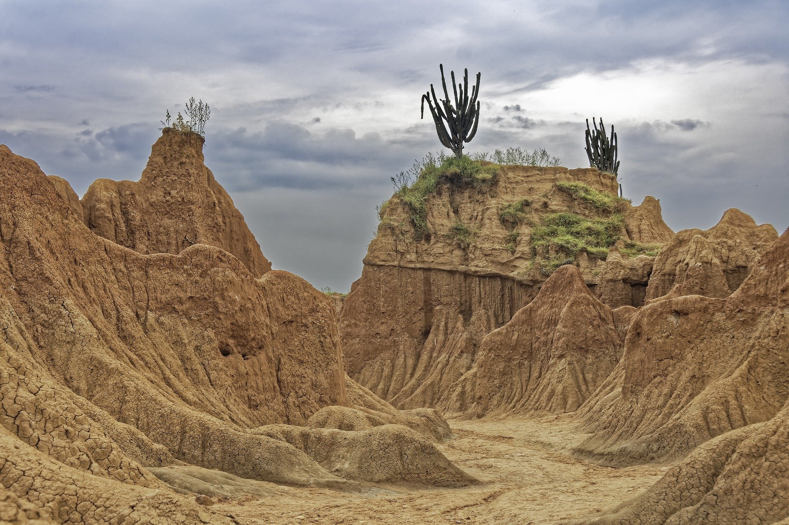
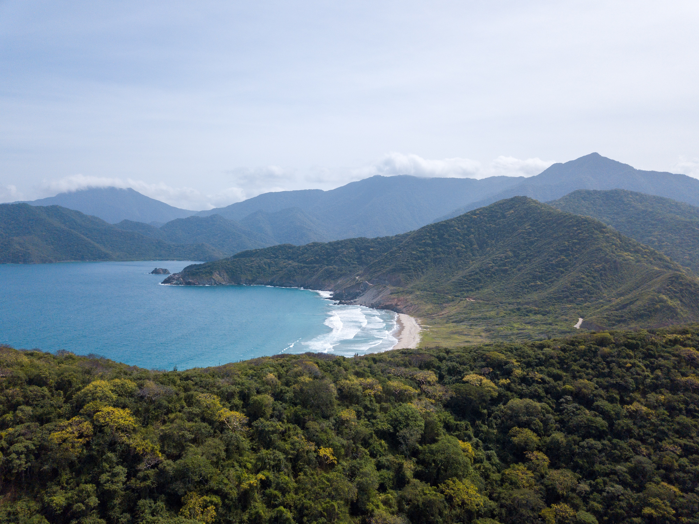
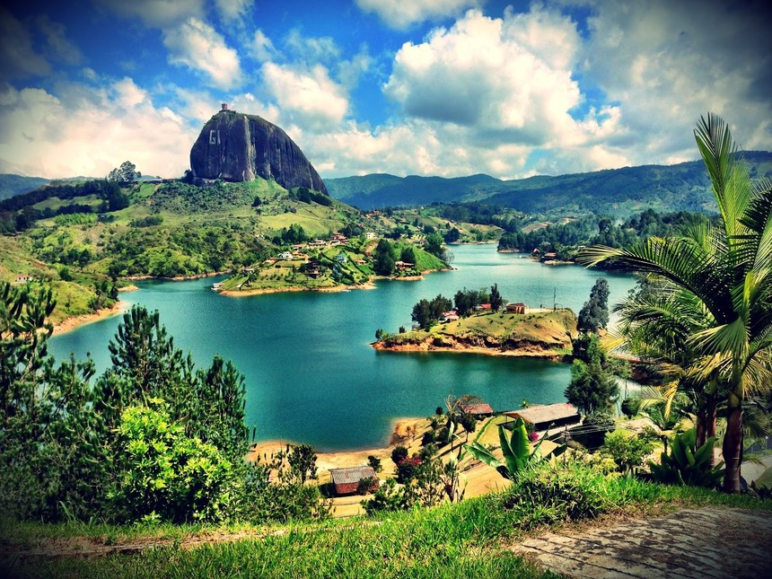

¿Which place do you want to see today?
Wonderful Places



Cartagena, Bolívar
Centro Historico de la Ciudad

Salento, Quindío
Valle del Cocora

Villavieja, Huila
Desierto de la Tatacoa

Santa Marta, Magdalena
Sierra Nevada de Santa Marta

Guatape, Antioquia
Piedra del Peñon

Sierra de la Macarena, Meta
Caño Cristales
San Andrés, San Andrés y Providencia
Playas en San Andrés